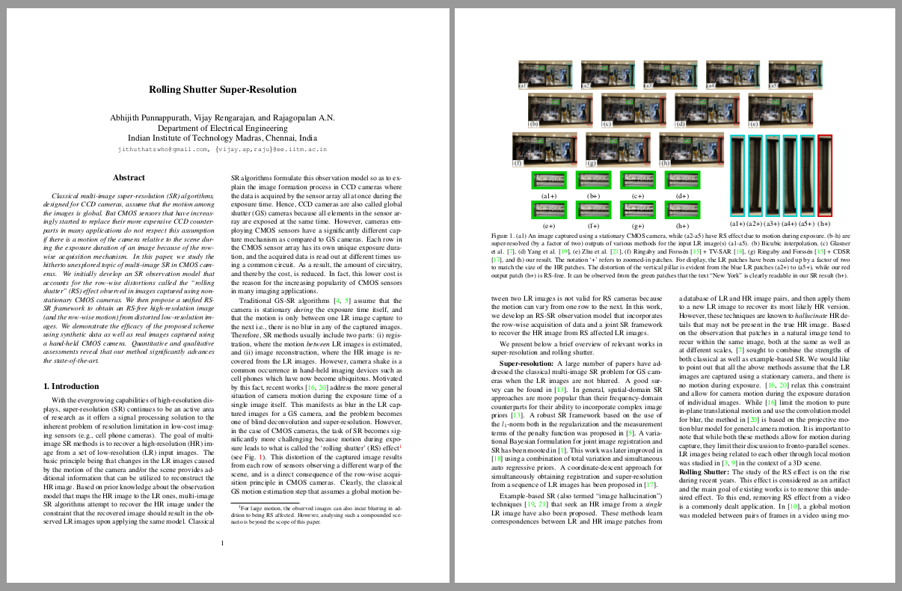

Abhijith Punnappurath Vijay Rengarajan A. N. Rajagopalan
Indian Institute of Technology Madras, India
|
Abstract
Classical multi-image super-resolution (SR) algorithms, designed for CCD cameras, assume that the motion among the images is global. But CMOS sensors that have increasingly started to replace their more expensive CCD counterparts in many applications do not respect this assumption if there is a motion of the camera relative to the scene during the exposure duration of an image because of the row-wise acquisition mechanism. In this paper, we study the hitherto unexplored topic of multi-image SR in CMOS cameras. We initially develop an SR observation model that accounts for the row-wise distortions called the "rolling shutter" (RS) effect observed in images captured using non-stationary CMOS cameras. We then propose a unified RS-SR framework to obtain an RS-free high-resolution image (and the row-wise motion) from distorted low-resolution images. We demonstrate the efficacy of the proposed scheme using synthetic data as well as real images captured using a hand-held CMOS camera. Quantitative and qualitative assessments reveal that our method significantly advances the state-of-the-art.
Downloads
|  |
"Rolling Shutter Super-Resolution" Abhijith Punnappurath, Vijay Rengarajan, A. N. Rajagopalan IEEE International Conference on Computer Vision (ICCV) Santiago, Chile, December 2015 |
BibTex
@inproceedings{punnappurath_iccv2015,
author = {Abhijith Punnappurath and Vijay Rengarajan and A. N. Rajagopalan},
title = {Rolling Shutter Super-Resolution},
booktitle = {Proceeding of the IEEE International Conference on Computer Vision},
year = {2015}
}